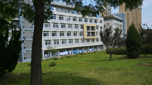

宿舍电费以寝室为单位按月计算，每月有一定的免费限额，超过限额需要补交电费，长期拖欠电费的寝室会被停电>_<，额定功率也有限制，避免使用电热毯、电锅、电吹风等大功率违禁电器，被导员查到是会给处分的。
另外，大工的寝室不通宵供电，断电时间在22:45分左右，建议购买充电台灯以备熬夜使用。不过不用担心，寝室的厕所独立于断电系统之外，在有人夜间进厕所时会自动点亮，走廊的灯也是整晚开着的。
在用水方面，自来水是免费的，但是要早知道寝室房间里的自来水龙头是不会流出热水来的=_=，所以每个寝室楼都配备了三台热水机供同学们插卡打水使用，热水的费用是一分钟三毛钱。
大一的寝室是不让开网的，大部分同学都会购买由我们OurEDA实验室提供的wifi，在人少的深夜速度还是可观的。
公共澡堂位于女寝一舍楼下，里面分为男、女两个大房间，水龙头之间是没有隔板的，所以有些南方的孩子可能会不习惯。水龙头插卡出水，洗一次澡大概3-5元，相比外面的澡堂要便宜不少。
（上文中提到的超市）:里面的东西还是蛮多的，一般能用到的生活用品、文具、食品一应俱全。
位于三舍楼下，洗衣店和理发店都是可以办卡的，洗衣店洗一盆衣服（5-6件）4元钱，理发店一次10元，复印店的大叔很和蔼。
都是生活中时常需要服务，ATM机会出现内部现金不足无法取钱的情况，所以来了大学一定要开网银，无论是在网上买东西还是给别人转账都很方便。剩下三家店还是不错的，毕竟都是为学生服务不会坑人。
